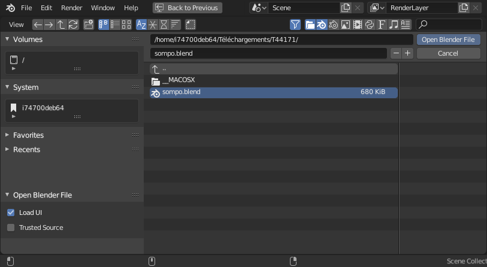
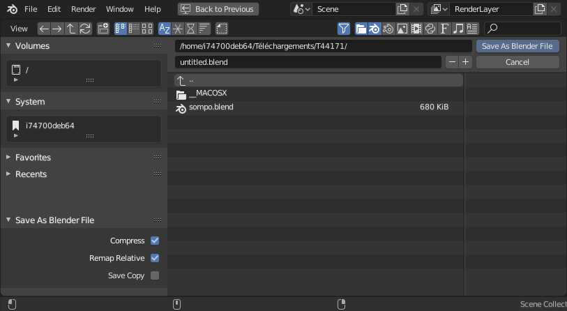

Mở & Lưu¶
Việc mở và lưu blend-file thường được thực hiện bằng File Browser.
Mẹo
Blend-file cũng có thể được mở bằng cách kéo và thả blend-file vào cửa sổ Blender. Phương pháp này còn cho phép link/append file.
Ghi chú
Các Thay đổi Chưa Lưu
Theo mặc định, khi thoát Blender hoặc tải một blend-file mới, nếu bạn có những thay đổi chưa lưu, một pop-up sẽ hỏi bạn xác nhận bỏ những thay đổi đó hay lưu chúng lại.
Hành vi này có thể được tắt bằng tùy chọn Save Prompt trong phần Save & Load của Preferences.
Mở File¶
Tham khảo
- Menu:
- Shortcut:
Ctrl-O
Ô văn bản phía trên hiển thị đường dẫn thư mục hiện tại, còn ô văn bản phía dưới chứa tên file đã chọn.

File Browser trong chế độ mở file.¶
Tùy chọn¶
- Load UI
Khi được bật, bố cục màn hình được lưu trong từng blend-file sẽ được sử dụng, thay thế bố cục hiện tại và các Workspace. Nếu không, bố cục màn hình của file sẽ bị bỏ qua.
Mẹo
Nếu bạn muốn làm việc trên một blend-file với các thiết lập mặc định của riêng mình, hãy khởi động một Blender mới, mở File Browser, tắt nút Load UI, rồi mở file mong muốn.
- Trusted Source
Khi được bật, các Python script và driver có thể nằm trong file sẽ được chạy tự động. Chỉ bật tùy chọn này nếu bạn tự tạo file đó, hoặc bạn tin rằng người đưa file cho bạn không kèm theo bất kỳ mã độc hại nào. Xem Python Security để cấu hình các tùy chọn tin cậy mặc định.
Mở File Gần đây¶
Tham khảo
- Menu:
- Shortcut:
Shift-Ctrl-O
Hiển thị danh sách các blend-file gần đây được mở. Di chuột tới một mục sẽ hiện ảnh xem trước cùng thông tin về blend-file đó. Chọn bất kỳ tên file nào trong danh sách để mở blend-file đó. Khi nhấp RMB vào một mục trong danh sách, một menu ngữ cảnh sẽ xuất hiện; một trong các tùy chọn có sẵn là Open File Location, sẽ mở vị trí đó trong trình duyệt file của hệ điều hành hoặc cửa sổ Finder.
Xóa Danh sách File Gần đây¶
Xóa các mục khỏi danh sách file gần đây.
- Remove
Chọn loại mục cần xóa.
- Tất cả các mục:
Xóa tất cả các file gần đây.
- Các mục không tìm thấy:
Xóa khỏi danh sách những file không còn tìm thấy, tức là đã bị di chuyển hoặc xóa.
Khôi phục¶
Phiên làm việc Trước¶
Tham khảo
- Menu:
Điều này sẽ tải file quit.blend mà Blender đã tự động lưu ngay trước khi thoát. Tùy chọn này giúp bạn khôi phục session làm việc gần nhất nếu, chẳng hạn, bạn lỡ tay đóng Blender.
Tự động Lưu¶
Tham khảo
- Menu:
Tùy chọn Auto Save cho phép bạn khôi phục phiên bản mới nhất được tự động lưu của file. Điều này hữu ích khi chương trình bị crash hoặc khi bạn đóng Blender mà không lưu.
Chọn tùy chọn này sẽ mở một file browser trỏ tới Thư mục tạm của hệ thống. Các file tự động lưu thường có tên dạng <filename>_autosave.blend hoặc một định danh ngẫu nhiên, và dùng phần mở rộng .blend.
Bạn có thể cấu hình khoảng thời gian tự động lưu và hành vi của nó trong Tùy chỉnh Auto Save.
Cảnh báo
Tự động lưu có một số hạn chế, đáng chú ý là nó không lưu các thay đổi trong Sculpt, Texture Paint và Edit mode.
Quan trọng
Mỗi dự án chỉ giữ một file tự động lưu. Khi khôi phục từ một bản tự động lưu, mọi thay đổi được thực hiện sau lần lưu cuối sẽ bị mất. Các bản tự động lưu cũ hơn không được giữ lại.
Lưu File¶
Tham khảo
- Menu:
- Shortcut:
Ctrl-S
Lưu blend-file hiện tại.
Nếu blend-file chưa từng được lưu, Blender sẽ tự động mở file browser Save As.

File Browser trong chế độ lưu file.¶
Khi lưu một blend-file, Blender cũng có thể lưu các ảnh bên ngoài đã bị thay đổi, tùy vào tùy chỉnh Save Modified Images. Xem Lưu các ảnh đã chỉnh sửa.
Lưu Tăng dần¶
Tham khảo
- Menu:
- Shortcut:
Ctrl-Alt-S
Lưu file Blender hiện tại với tên được tăng số, không ghi đè lên bất kỳ file nào sẵn có.
Lưu Dưới dạng¶
Tham khảo
- Menu:
- Shortcut:
Shift-Ctrl-S
Chọn đường dẫn để lưu blend-file.
Cảnh báo
Nếu đã tồn tại file trùng tên như vậy, ô văn bản sẽ chuyển sang màu đỏ để cảnh báo rằng file sẽ bị ghi đè.
Mẹo
Dùng các nút plus hoặc minus ở bên phải tên file, hoặc NumpadPlus, NumpadMinus để tăng/giảm con số ở cuối tên file (ví dụ đổi file_01.blend thành file_02.blend).
Tùy chọn¶
- Nén
Giảm dung lượng của blend-file thu được nhưng mất nhiều thời gian hơn khi lưu và tải. Tùy chọn này hữu ích để phân phối file trực tuyến và tiết kiệm dung lượng ổ đĩa cho các dự án lớn. Tuy nhiên, nó có thể làm chậm khi thoát Blender, hoặc trong thao tác bình thường khi tự động lưu các file backup. Xem Nén & Sử Dụng Bộ Nhớ để biết thêm thông tin.
Gợi ý
Thuật toán nén được dùng là Zstandard. Nó không riêng gì Blender dùng nên file có thể được nén/giải nén bằng các công cụ bên ngoài.
Thay đổi trong phiên bản 3.0: Trước phiên bản này, thuật toán nén được dùng là Gzip. Điều này có nghĩa là để mở các blend-file mới hơn trong các phiên bản trước 3.0, blend-file trước hết phải được lưu không nén bằng một phiên bản Blender mới hơn, hoặc được giải nén bằng một công cụ Zstandard bên ngoài.
- Remap Relative
Tùy chọn này ánh xạ lại Đường dẫn Tương đối (như các thư viện được link và ảnh) khi lưu file ở một vị trí mới.
- Save Copy
Lưu một bản sao của trạng thái làm việc hiện tại nhưng không kích hoạt file vừa lưu.
Save Copy¶
Tham khảo
- Menu:
Chọn đường dẫn để lưu blend-file, nhưng quay lại chỉnh sửa file gốc sau khi hoàn tất. Có thể dùng cách này để lưu backup của trạng thái làm việc hiện tại mà không làm thay đổi file gốc.
Để biết các tùy chọn, xem Lưu Dưới dạng.
Đường dẫn Tương đối¶
Nhiều blend-file tham chiếu tới các ảnh bên ngoài hoặc các blend-file được link khác. Đường dẫn cho Blender biết chỗ tìm các file này. Nếu các file bên ngoài bị di chuyển, blend-file tham chiếu tới chúng sẽ hiển thị không đúng.
Khi bạn chỉ định một trong các file bên ngoài này, tùy chọn mặc định là tạo đường dẫn tương đối. Blender lưu một đường dẫn từng phần, được tính tương đối so với vị trí thư mục của blend-file tham chiếu. Lựa chọn này hữu ích khi bạn cần sắp xếp lại thư mục hay di chuyển file của mình.
Với đường dẫn tương đối, bạn có thể di chuyển blend-file tới vị trí mới miễn là các file được link bên ngoài cũng được di chuyển theo. Ví dụ, bạn có thể gửi cho ai đó một thư mục chứa một blend-file và một thư mục con gồm các ảnh bên ngoài mà nó tham chiếu.
Khi đường dẫn tương đối được hỗ trợ, File Browser cung cấp hộp kiểm Relative Path; khi nhập đường dẫn vào ô văn bản, hãy dùng tiền tố hai gạch chéo (//) để bật chế độ này.
Đường dẫn tương đối là mặc định, nhưng có thể thay đổi trong tab File của Preferences.
Ghi chú
Bạn không thể dùng đường dẫn tương đối cho một blend-file untitled (chưa đặt tên) mới. Hãy lưu file trước khi link tới các file bên ngoài.
Gợi ý
Nếu cần di chuyển một blend-file so với các tài nguyên được link của nó, hãy dùng chức năng Save As của Blender, vốn có tùy chọn Remap Relative các liên kết file.